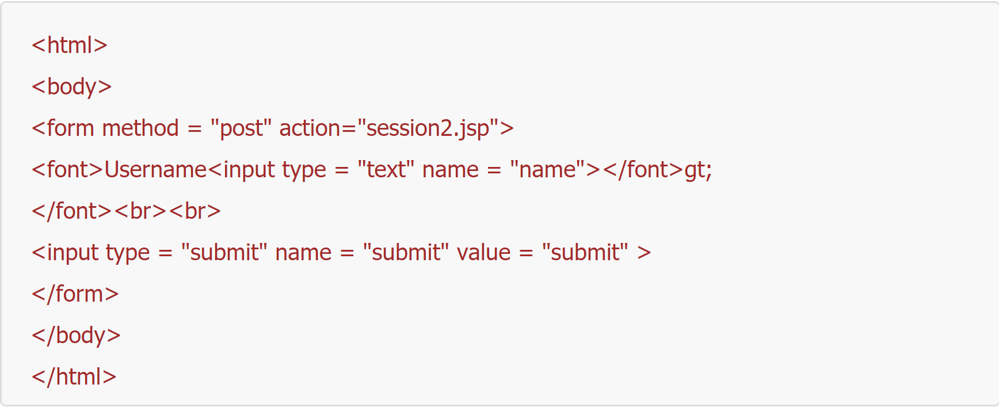
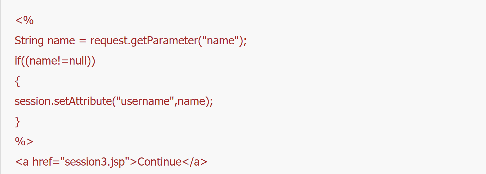
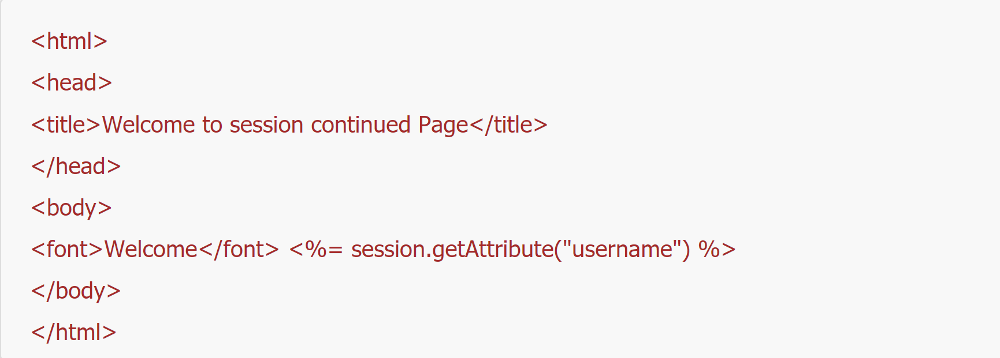

.png)
Session Handling
Session handling is done when a requested data is needed to be sustained for further use. Session handling becomes important because http protocol takes every request as new one.
JSP
In JSP, every request that arises is being generated as a unique session that is being restores to the client machine. Cookies stores the information to the client browser for more efficient browsing, client can access again the sites they have accessed before without loggin in again. Session is embedded to GET and POST method. Rewriting of session information is appended to the end of the URL.
Node JS Libraries
Example 1:

Example 2:

Example 3:

In Java, the instance of Session object is javax.servlet.http.HttpSession. During a conversation with the server,session object provides a stateful context for multiple page requests from the same client. Session object will be available of the JSPs and servlet once the user has connected to the site and until it closes.
<
Session in Java Servlet – HttpSession
1.
HttpSession getSession
2.
HttpSession getSession(boolean flag)
3.
String getId
4.
Object getAttribute(String name)
5.
long getCreationTime
6.
ServletCOntext getServletContext
7.
Hboolean isNew
8.